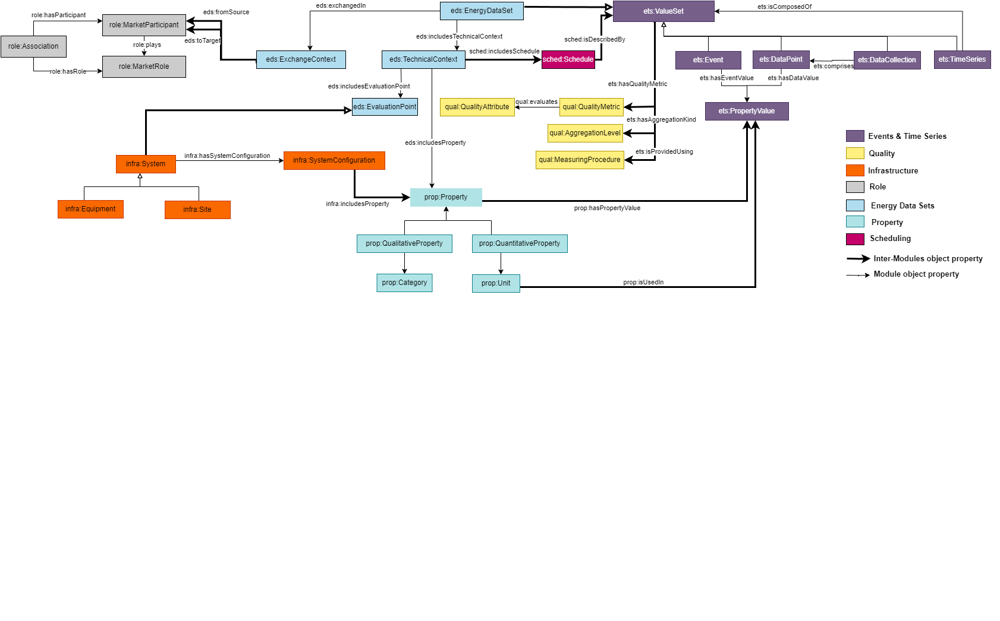

The repository structure is built to fit multi-level modular ontologies.
It hosts also relevant alignements to external resources (ontologies/standards).
The tooling section includes automation scripts for various tasks: ontology building, documentation release, semantic validation, data semantization...
The omega-X ontology is defined by two modules: a core ontology for Events and Time Series (ETS) and a domain ontology for Energy Data Set (EDS).
Group Name| Module | Scope |State
|---|---|---|---|
|Top Level | Events and Time Series (ETS) | ETS ontology provides classes and properties to allow commonly used data structures to be described. | V 1.0
|Domain | Energy Data Set (EDS) | EDS ontology extends ETS definitions with specefic energy domain context (both technical and business). | V 1.0
|Domain | Eumed Metering (EME) | EME ontology is a semantisation of the Eumed metering profile of the CIM standard. | v1.0
|Domain | Property (PROP) | PROP ontology provides a taxonomy of properties used in the energy domain. | v1.0
|Domain | Infrastructure (INFRA) | INFRA ontology provides a common description for systems infrastructures in the energy domain, to be further specialiazed in UC ontologies. | v1.0
|Domain | Actor role (ROLE) | ROLE ontology provides a description of business entities roles in the dataspace and in their business activities. | v1.0
|Domain | Quality (QUAL) | QUAL ontology provides a taxonomy of quality indicators associated with datasets. | v1.0
|Domain | Scheduling (SCHE) | SCHE ontology provides a common description of schedules. | v1.0
|Use Case Family | Renewable (REN) | REN is the use case ontology for the renewables use case family. | V0.1 (in progress)
|Use Case Family | Flexibility (FLEX) | FLEX is the use case ontology for the flexibility use case family. | V0.1 (in progress)
|Use Case Family | Local Energy Communities (LEC) | LEC is the use case ontology for the lec use case family. | V0.1 (in progress)
|Use Case Family | Electromobility (EM) | EM is the use case ontology for the electromobility use case family. | V0.1 (in progress)
Overview of common modules
The figure below illustrates common modules (Top level and domain modules). The online diagram version is available here :
Common Modules Diagram

Utils
Ontology diagrams can be defined using CHOWLK diagram.net. A library for specific ontology conceptualisation is available here CHOWLK Ontology library. To learn more about visual notation specification, see: CHOWLK Documentation.
License
This project is licensed under the MIT License. See the LICENSE file for details.
The quality ontology enables to describe quality dimensions associated with data. It can be :
- Aggregation Level: indicates the granularity of each data value, such as sum of values or average. Aggregation can be performed spatially, temporally or logically.
- Quality Metrics: indicates the quality metrics attributes associated with data according to data quality dimensions defined by ISO 25012.
- Measurement Procedure: indicates what procedure produced the data: measurement, prediction,...
The degree to which subject data associated with an entity has values for all expected attributes and related entity instances in a specific context of use.
The degree to which data has attributes that correctly represent the true value of the intended attribute of a concept or event in a specific context of use..
The degree to which data has attributes that adhere to standards, conventions or regulations in force and similar rules relating to data quality in a specific context of use..
The property ontology is a common module of the CSDM designed to provide a structured taxonomy for the properties of the energy domain.
It distinguishes two type of properties:
- Quantitative properties: physical quantities associated to numerical values and unit of measures.
- Qualitative properties: characteristics of real-world evaluated using non numerical categorical values.
The property ontology presents a taxonomy of properties for which values (static or dynamic) are defined using Events and Time Series Module.
A qualitative property is a characteristic of real world with possible values defined by a defined category. Qualitative properties have non numerical values.
This Scheduling Ontology helps to represent a schedule, which organizes and arranges events or activities according to specific dates, times, and other relevant parameters.
A schedule is a plan of performing a specific task. In the energy domain, schedule can be used to manage energy consumption, production activities to optimize efficiency and define value sets in systema or a services
Specifies the time interval during which the schedule is considered valid or applicable. This property links the schedule to the duration of its effectiveness.
Specifies the periodicity or recurrence pattern of the schedule. This property defines the frequency at which the schedule's events or activities repeat over time.
This Scheduling Ontology helps to represent a schedule, which organizes and arranges events or activities according to specific dates, times, and other relevant parameters.
A scheduler is an entity responsible for managing and organizing the events or the tasks within a schedule. This entity can be either a person or a machine.
Purpose: Contextual information about shared data sets in an Energy Data Space should include information about infrastructure that produced those data. Scope: Infrastructure ontology provides OWL classes and properties to allow infrastructure of an energy system to be described. Description: This Infrastructure Ontology helps to define infrastructure components in various domains such as photovoltaic plants, electromobility, etc. It primarily comprises interconnected systems that are have attributes that are set in a datsheet or configured..
An equipement is a physical system which is part of the infrastructure.An equipment may be, for instance, an inverter or an electric vehicle charging station.
A site is a part of the physical world or a virtual world that is inherently both located in this world and having a 3D spatial extent. It can include more than one equipment.A site may be, for instance, a solar plant or an electric vehicle charging station pool.
A system may be an equipment, a site, or any other physical or virtual system. A system that is neither an equipment nor a site may be, for instance, an electric grid or a data analytics service available on a Dataspace.
Event and time series ontology describes the global structure of value sets. Value sets can be :
- Data points, elementary data structure that holds a data value and optional data time.
- Events, elementary data structure that holds an event value and mandatory trigerring time.
- Data collections, complex data structures that includes multiple data points.
- Time series, timely ordered data collections. Time series include data points, events or data collections. They can be nested too.
Associates a temporal context for value set coverage. This represents the timeseries entire coverage interval, a data point or an event validity time, i.e time period in which collected values still valid.
Event and time series ontology describes the global structure of value sets. Value sets can be :
- Data points, elementary data structure that holds a data value and optional data time.
- Events, elementary data structure that holds an event value and mandatory trigerring time.
- Data collections, complex data structures that includes multiple data points.
- Time series, timely ordered data collections. Time series include data points, events or data collections. They can be nested too.
Associates a temporal context for value set coverage. This represents the timeseries entire coverage interval, a data point or an event validity time, i.e time period in which collected values still valid.
This Energy Data set Ontology helps to define data sets in Energy Data Spaces. It adds:
- the technical context as the property, the schedule, and the quality associated to an energy data set
- the exchange context as the participants of the data exchange.
- the evaluation point attached to the data set exchange.
Scope : Sharing data resources in complex environments like in the case of energy domain requires some contextual information together with data values to facilitate and ensure consistent interpretation of data.
Evaluation point concerned by the data exchanged. It can be either a physical or virtual component. An evaluation point can be a smart meter collecting the data or a software compiling the data.